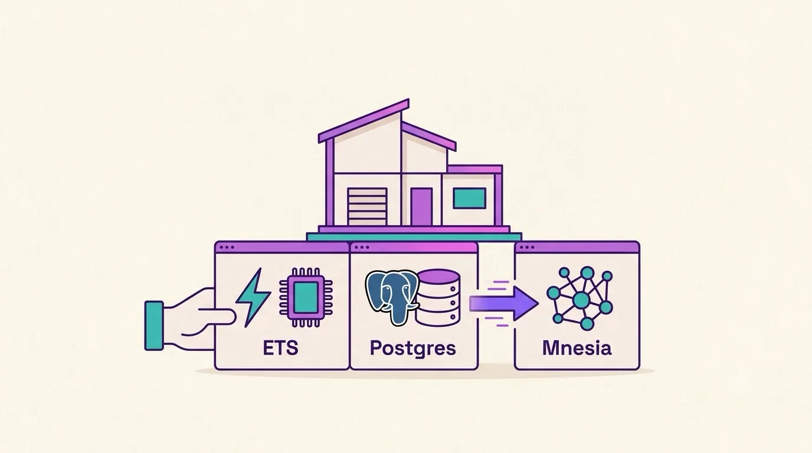

Chapter 06 · Where Data Lives
6Data Layers
The data layer is where a resource's records actually live. It's a single line — and you can change it without touching your domain logic.
You've seen this line on the ticket all along:
use Ash.Resource, domain: Helpdesk.Support, data_layer: Ash.DataLayer.Ets # ← in-memory, for the tutorial
Swap that one atom and the same resource — same attributes, actions, relationships — now persists to PostgreSQL:
data_layer: AshPostgres.DataLayer # ← real database
| Data layer | Good for |
|---|---|
Ash.DataLayer.Ets | Tests & tutorials — fast, in-memory, gone on restart. |
AshPostgres.DataLayer | The production workhorse — real SQL, migrations, transactions. |
Ash.DataLayer.Mnesia | Erlang's built-in distributed store. |
| none | Embedded / computed resources that never persist. |
AshPostgres is the one you'll reach for in real apps. Beyond storing rows, it can generate your database migrations from the resource definitions — so even your schema changes derive from the model.

A clean flat-vector editorial illustration: a single tidy house (representing the domain / resource) resting on top of three interchangeable foundation blocks shown side by side and clearly swappable — one labeled with a lightning/memory chip icon (ETS), one with an elephant/database-cylinder icon (Postgres), one with a network-of-nodes icon (Mnesia). A hand or arrow suggests sliding one block out and another in, while the house stays perfectly still. Warm off-white background, violet and teal accents, generous whitespace, no baked-in text labels. Target size ~1280×720px, 16:9 landscape; keep the subject centred with safe margins.
Generate this with your image agent, then drop the file here.
AshPostgres if you already know you'll ship
it — the migration tooling is worth adopting early. Reserve the ETS layer for
tests and throwaway spikes where you don't want a database running at all.
That's the last piece of the core. You now have the whole spine of Ash: a resource with attributes and actions, grouped in a domain, called through a code interface, connected by relationships, summarized by derived data, and persisted by a data layer. Next: guarding it, and generating the rest.